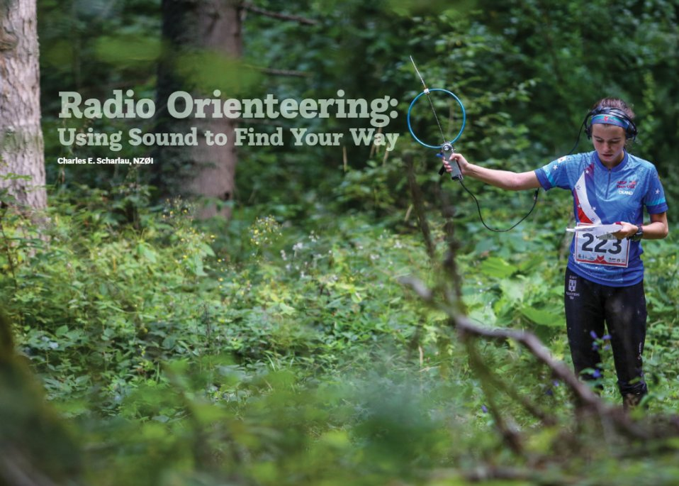

해설 페이지 · 듣기 지원
ARDF 입문 가이드
경기가 어떻게 진행되는지, 두 대역의 전파가 어떻게 다른지, 수신기와 안테나 패턴, 지도 읽기, 실전 탐색 순서까지 한 편으로 정리했습니다. 처음 읽는다면 이것 하나로 시작하십시오.
- 1 경기 소개
- 2 종목
- 3 전파
- 4 수신기
- 5 지도
- 6 실전 탐색
- 7 FAQ

사진: ARRL On the Air숲에 숨은 송신기를 수신기와 지도, 나침반으로 찾아 달리는 경기입니다. 흩어져 있던 자료를 목적에 따라 모았습니다. 처음이라면 1번부터, 대회를 앞두고 있다면 2번, 경기를 마쳤다면 3번에서 내 경로를 돌아보십시오.
먼저 전체 그림을 잡고, 궁금한 것은 질문으로 찾아봅니다
경기가 어떻게 진행되는지, 두 대역의 전파가 어떻게 다른지, 수신기와 안테나 패턴, 지도 읽기, 실전 탐색 순서까지 한 편으로 정리했습니다. 처음 읽는다면 이것 하나로 시작하십시오.
자격증이 필요한지, 체력이 약해도 되는지, 송신기는 어떻게 구별하는지처럼 처음 나가는 사람이 자주 묻는 질문을 여섯 분류로 모았습니다. 필요한 질문만 골라 보면 됩니다.
입문 가이드의 각 장을 주제별로 더 깊게 다룬 자료입니다
ARDF 경기 종목별 안내 및 컨트롤 기호 모음
클래식 · 스프린트 · 폭스오링 세 종목의 송신기 수와 발신 시간 비교, 코스 기호, 송신기 모스 부호와 탐색 순서를 정리했습니다.
글 보기전파 특성과 ARDF 수신 가이드
3.5 MHz가 능선을 넘어 오는 이유, 145 MHz의 전파 그림자와 반사파, 두 대역의 안테나 특성을 비교합니다. 수신기를 직접 돌려 보는 2D 시뮬레이터가 들어 있습니다.
글 보기ARDF 지도 기호 모음
오리엔티어링 지도의 색과 기호를 지형 · 바위 · 물 · 식생 · 인공물로 나누어 정리하고, 기호마다 경기 중에 어떻게 판단하는지 메모를 달았습니다.
글 보기SUPERFOX 수신기 설명서
국내에서 많이 쓰는 SUPERFOX 3.5 MHz · 145 MHz 수신기의 조작, 안테나 패턴, 탐색 순서, 메모리 저장 · 지우기 시연, 배터리와 사양을 설명서 기준으로 정리했습니다.
국내 대회 일정과 수신기 대여는 ARDF 전파방향탐지경기 밴드에 공지됩니다. 국내 ARDF 대회를 주관하는 한국아마추어무선연맹(KARL)에서도 대회와 단체 소식을 볼 수 있습니다.
내가 달린 길을 다시 보며 다음 경기를 준비합니다
경기 때 기록한 GPX 파일을 불러와 내가 달린 경로를 3D 지도 위에 다시 그려 봅니다. 어디서 방향을 잘못 잡았는지, 어느 구간에서 시간을 많이 썼는지 돌아보며 다음 경기의 탐색 순서와 경로 선택을 다듬을 수 있습니다.